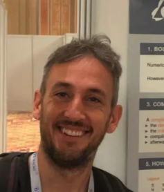

Artificial intelligence · Automated planning
Enrico Scala
Associate Professor
University of Brescia

News
- 1 paper accepted at KR-26!
- 3 papers accepted at ICAPS-26 !!!
- 4 papers accepted at ICAPS-25 :D:D:D
- Promoted to Associate Professor :D
- 1 Paper accepted at KR-24!!
- 1 Paper accepted at ECAI-24!!
Earlier news (20)
- 1 Paper accepted at IJCAI-24!!
- 2 Papers accepted at ICAPS-24!!
- 2 Papers accepted at AAAI-24!!
- Invited Talk at IJCAI-23!!
- 1 paper accepted at IJCAI-23!!
- 3 papers accepted at ICAPS-23!!!!!
- JAIR paper on translations from continuous to discrete time models (PDDL+ to PDDL2.1) accepted!
- BEST PAPER AWARD AT AIXIA-22
- 2 papers accepted at IJCAI-22 !!!
- 1 paper accepted at KR-22 !!!
- 2 papers accepted at ICAPS-22 !!!
- Promoted to Senior Researcher, tenure track position for associate professor (RTD-B) at UNIBS
- 3 papers accepted at ICAPS-21 !!! (AGAIN!)
- Invited Lecture at the ICAPS-20 Summer School on Numeric Planning See it here! (Joint presentation with Alfonso Gerevini)
- Journal paper on Subgoaling Heuristics for Numeric Planning accepted on JAIR
- Journal paper on CPCES with Alban Grastien accepted in Artificial Intelligence Journal!
- 3 papers accepted at ICAPS-20 !!!
- 2 papers accepted at AAAI-20 !!
- Moved to Università di Brescia for a Lecturing Position (RTD-A)
- AAAI-19, Talk about Planning with Metric Trajectory Constraints
About Me, Research-wise
Associate Professor at University of Brescia.
My main research area is in the field of Artificial Intelligence and, more precisely, automated planning and scheduling. Automated planning is the AI, model-based approach to the problem of deciding what to do in order to achieve some objective. Scheduling complements planning by studying when exactly actions need to be taken according to given temporal constraints such as deadlines. Automated planning is the building block of any autonomous agent, and can be used either alone or in a reinforcement learning approach.
Among the many models and languages of planning that one can find in the literature, I am mainly interested i) in models where one can explicitly express non-determinism, partial observability and timed actions and ii) in languages grounded on first order logic involving both numeric and propositional constructs. My main contributions are on planning under non-determinism via online planning, plan execution, repair, replanning, plan adaptation (AICOM-14, ECAI-14, ICAPS-14, IJCAI-15, ICAPS-22) or via conformant planning (IJCAI-17, ICAPS-18, AAAI-20, AIJ-20, ICAPS-21); and under deterministic assumptions but with powerful numeric and temporal representations through heuristic search, compilation to other theories such as Satisfiability Modulo Theory or simpler formalisms (SOCS-15, IJCAI-15, IJCAI-16, ICAPS-16, ECAI-16, IJCAI-17, IJCAI-18, AAAI-19, ICAPS-20, JAIR-20, ICAPS-21, ICAPS-22, JAIR-23, ICAPS-23x2). (See research section for more information.) I am also the maintainer of the ENHSP planning system, and SPRINGROLL, two PDDL planners used by the AI planning community; they focus on numeric reasoning in planning problems.
I am an active member of the AI community. Since 2014, I have been serving as a Program Committee, reviewer, and session chair for top-ranked AI conferences (e.g., IJCAI, ICAPS, AAAI, ECAI) and AI Journals (e.g., AIJ, JAIR, JAR, JETAI).
Current and Past Projects
Past Projects: STEPS (Unito) - Sistemi e Tecnologie per l'EsPlorazione Spaziale, study of innovative systems for robots in space missions; SMAT-F2 (Unito) - UAVs control in a surveillance scenario; ARC Project (Australian National University) - Robust AI Planning for Hybrid Systems. MAIS (FBK) - planning and scheduling for controlling interacting hoists in a galvanic plant.
Current Projects: AIPLAN4EU (UNIBS) - Building the next level API for Planning Problems, MOSORE (UNIBS) - Planning the behavior of a Drone
Teaching
I have been lecturing, tutoring and coordinating the labs for the Artificial Intelligence course whilst I was at the Australian National University, and I am now teaching two courses at UNIBS: Computation Systems (one module) and Intelligent Systems.
Supervision
PostDoc: Luigi Bonassi
PhD Students (current): Luigi Bonassi (co-supervision Gerevini), Valerio Borelli (co-supervision Gerevini), Alberto Rovetta (co-supervision Gerevini)
Master Thesis Students (past): Andrea Merici, Andrea Paolini, Nicola Tassi (co-supervision Saetti) Luigi Bonassi (co-supervision Gerevini), Valerio Borelli (co-supervision Gerevini), Alberto Rovetta (co-supervision Gerevini), Matteo Capoferri (co-supervision Gerevini), Gianluca Prato (co-supervision Torasso), Fabio Rivoira (co-supervision Torasso), Giovanni Siragusa (co-supervision Torasso), Giorgia Fenoglio (co-supervision Torasso), Dongxu Li (co-supervision Haslum and Bogomolov)